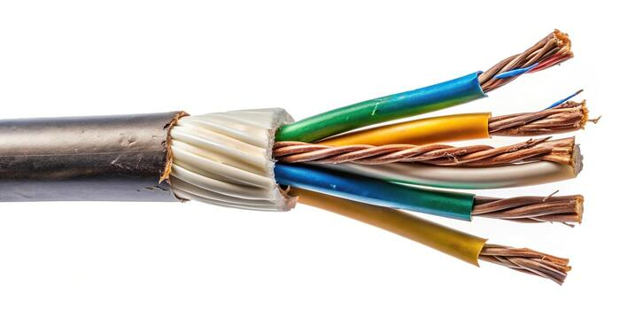

Twisted pair cable is a type of wiring in which two conductors of a single circuit are twisted together to cancel out electromagnetic interference (EMI). It is widely used in Ethernet networks for data transmission.
There are two main types: Unshielded Twisted Pair (UTP), which is the most common and cost-effective, and Shielded Twisted Pair (STP), which includes additional shielding to reduce interference.
Common categories include Cat3 (used for telephone lines), Cat5 (up to 100 Mbps), Cat5e (up to 1 Gbps), Cat6 (up to 10 Gbps), and Cat6a (up to 10 Gbps over longer distances).
Advantages include low cost, ease of installation, and flexibility. However, it has limitations in distance (typically up to 100 meters for Ethernet) and can be affected by electromagnetic interference without proper shielding.
